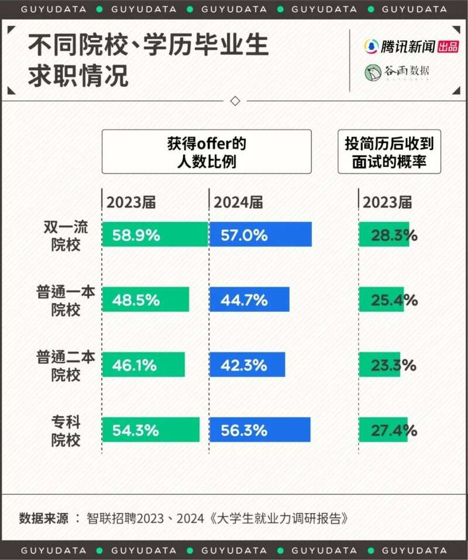
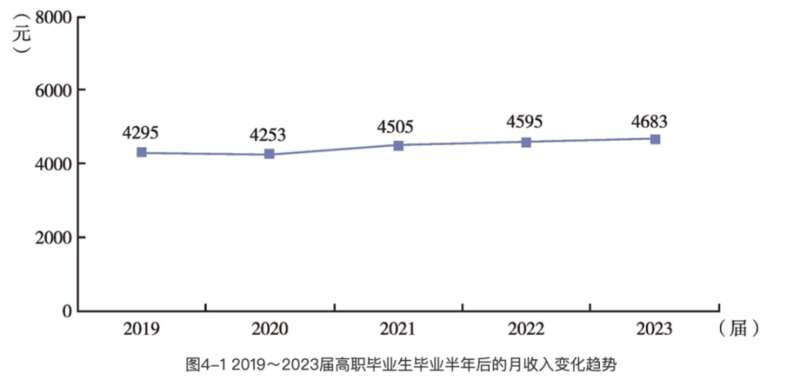
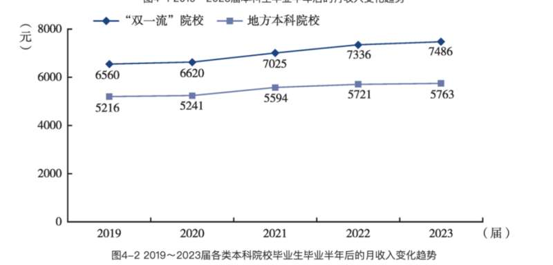
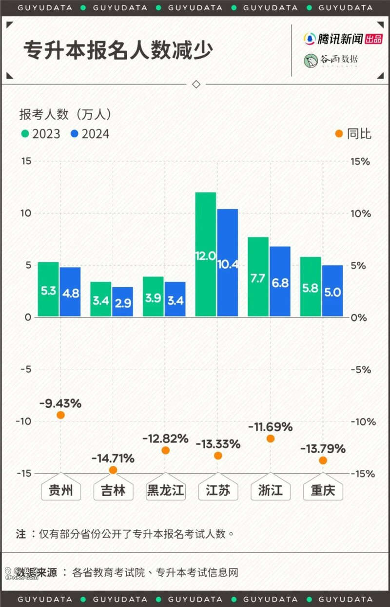

以前只听说过“专升本”，现在情况倒过来，不少人热衷“本升专”，也就是本科毕业之后，回炉职校，只为尽早上岸。
人们突然发现了大专的好。比如能学一门技术或手艺；有的是为了进入专科院校开设的国企订单班，或者考警校，毕业了能有个编制。甚至有高考高分学生为了就业，放弃双一流选择警校大专的案例。
“本升专”的说法，半是调侃半是认真，但它确实是个不容忽略的现象。
按照当下的就业形势，年轻人已经不敢有更多奢望，现在大家对学历的追求有怎样的变化？与社会环境的变化有何关系？
01
“本升专”真不是开玩笑
今年1月，《南方周末》就报道过本科生去职校学习技术、手艺的现象。
广东岭南职业技术学院的老师说，这两年招收的本科生超过150人，主要是想通过培训考取心理咨询、营养和健康管理等方向的证书。
成都新东方烹饪学校的老师在报道中提到，在跟自己学习川菜烹饪的学生中，三成有本科以上的学历。
青岛技师学院从2009年开始创办“大学生技师班”，招收已经有专科及本科学历的学生。2015年以来，大学生技师班差不多三分之一的学生是本科生。
大学生对“本升专”的接受度比想象中高得多。根据智联招聘对大学毕业生的调查，有超过一半的本科毕业生认为有的本科生选择回炉技校是合理的选择，因为“市场对专业技能的需求大，就业机会更多”。
“本升专”的讨论也蔓延在社交媒体上。有博主在今年5月发帖，说自己本科的专业太差了，毕业后求职无望，想要再走单招去大专重新换个专业，不知道要怎么操作，是否需要注销本科的学籍等等。这个帖子吸引了2000多条评论。
一部分评论支持去大专重读的选择。他们觉得，在现在的就业形势之下，本科出来再费心考研还不一定能上岸，不如直接去某些可以包就业的专科。甚至有评论说，自己身边有人就是这样操作的——“双一流毕业去读大专，毕业出来分配工作去地铁上班，福利待遇好，工作时间也固定，本科生自己能找到这样的工作都是谢天谢地了。”
而针对想去大专学技术的人，不少评论则认为不值得。有在读专科的学生说，专科学的技术都很水，大多数同学以后也不会从事本专业的工作。
02
专科比普通一本就业率更高
现如今，专科就业率比普通一本更高。根据智联招聘最新发布的2024《大学生就业力调研报告》，专科院校的毕业生，求职拿到offer的几率是56.3%，只略低于双一流院校的57%。专科的offer获得率比普通一本和二本院校都足足高了10%以上，差距比去年更明显了。
从每次投简历收到面试的几率来看，专科生同样仅次于双一流院校的毕业生，要高于普通一本和二本的本科生。

此外，一些专科能提供更确定的未来。
今年高考，专科警校吸引了不少高分考生。比如真实故事计划采访到的一位浙江考生，她的高考成绩635分，被省内的大专院校浙江警官职业学院录取。
635分在省内已经足以被杭州电子科技大学、宁波大学录取；在省外，甚至可以读东北师范大学、西南交通大学这样的211。
之所以选择读警校，是因为去年浙江警察类专业毕业生中，浙江籍的毕业生入警率高达95%。也就是说，3年大专毕业后，绝大多数人就能有编制。
当然，专科毕业薪资水平还是不如本科生。根据麦可思《2024年中国高职生就业报告》和《本科生就业报告》，2023年，高职毕业生毕业半年后的月收入平均4683元，地方本科院校毕业半年后的月收入平均5763元，双一流院校则是7486元。


但考虑到当下的就业环境，尤其是对于学校比较普通、非热门专业的毕业生来说，能找到工作比找到好工作更重要。猎聘大数据研究院的调查结果显示，2024届的应届毕业生中间，高达61%认同“如果没有找到心仪的工作会选择蓝领工作”。
03
想找工作的年轻人不再追求高学历
趋势是，在就业普遍比较难的情况下，追求名校、高学历的人越来越少了。2024年，报名考研的人数是2015年以来首次降低。
在职业教育领域，选择专升本的人也少了。
2024年，在部分公布了专升本考试人数的省份里，今年参与专升本报考的专科学生普遍减少了10%以上。去年专升本考试还有12万人报名的江苏，今年直接减少了13%，只有10.4万人报名。

追求高学历的动力越来越小，也是因为求职就业时帮助不大。
本科生的工作薪资优势下降。在澎湃新闻今年的报道中，通过对2010年和2020年《中国家庭追踪调查》进行数据分析，比较不同学历毕业生毕业3年内年收入和全国人均可支配收入，发现10年间，本科毕业生收入的薪资指数下降得最为明显。从2010年的人均收入的近2倍，下降到2020年的1.33倍，只略高于人均可支配收入。
此外，在2020年《中国家庭追踪调查》中，有高达50.6%的本科学历工作者认为自己的工作不需要本科学历，属于过度教育，比例远高于大专、职高学历的工作者。
另一个原因在于，现在很多用人单位对第一学历更看重。根据《2024年中国高职生就业报告》，专升本之后的学生和普通的高职毕业生相比，收入几乎没有差别。在职场中，经历过学历提升的高职毕业生，工作三年后月收入平均是6883元，学历未提升的则是6876元，差异非常小。
总之，如今已经不是越高学历，越容易就业的时代。
年轻人想开了，要么毕业能有编，要么身上有点技术。既然上岸是最终目的，那就选离得最近的渡口吧。